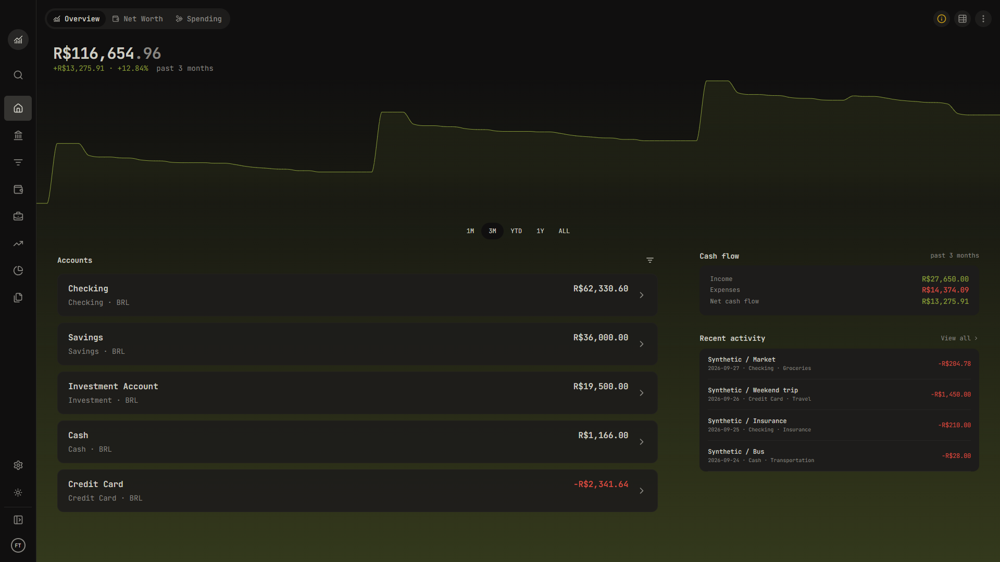

Approved Phase 1.7 application shell and Overview. All displayed financial data is synthetic.

Additional captures: chart tooltip ? expanded sidebar ? mobile Overview ? mobile navigation ? light theme.
Validation report ? Third-party notices